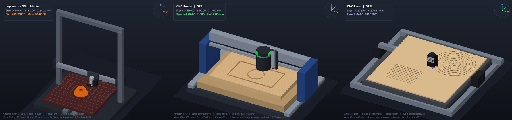
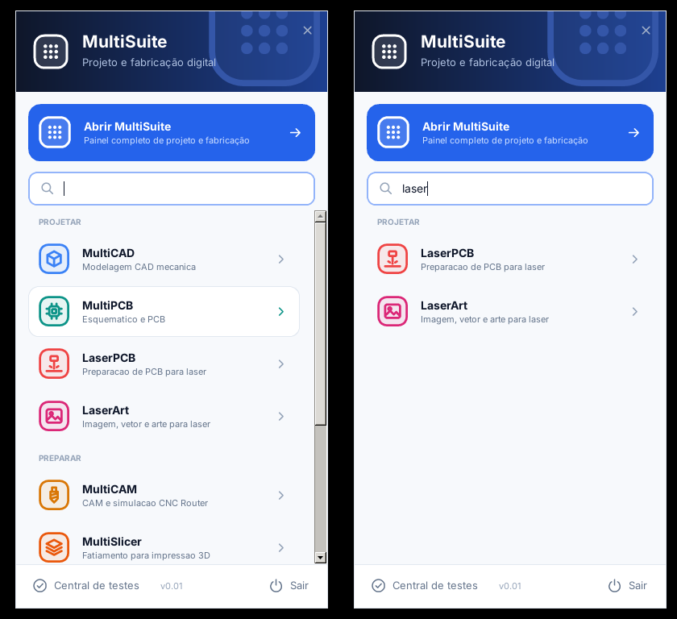
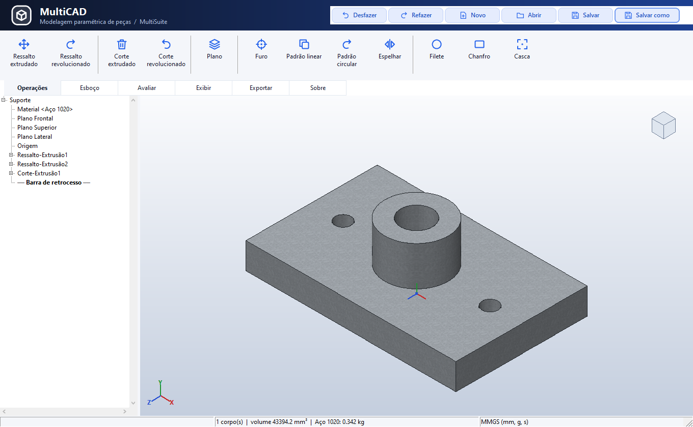
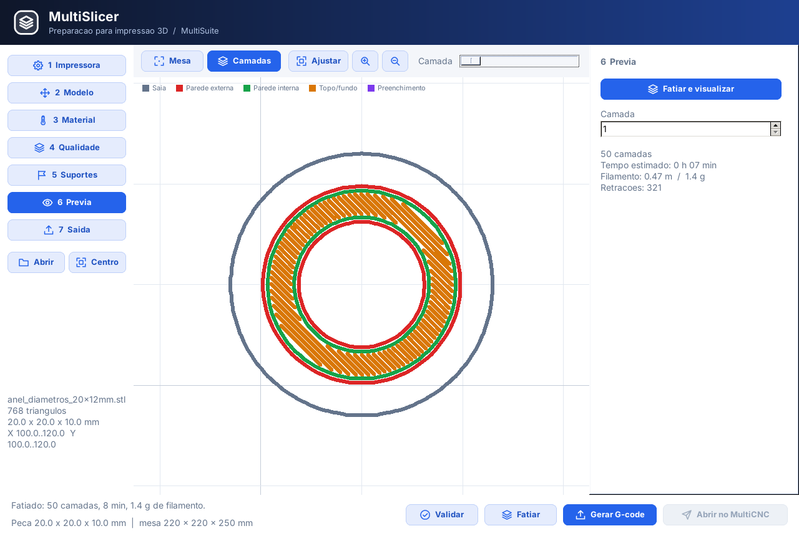
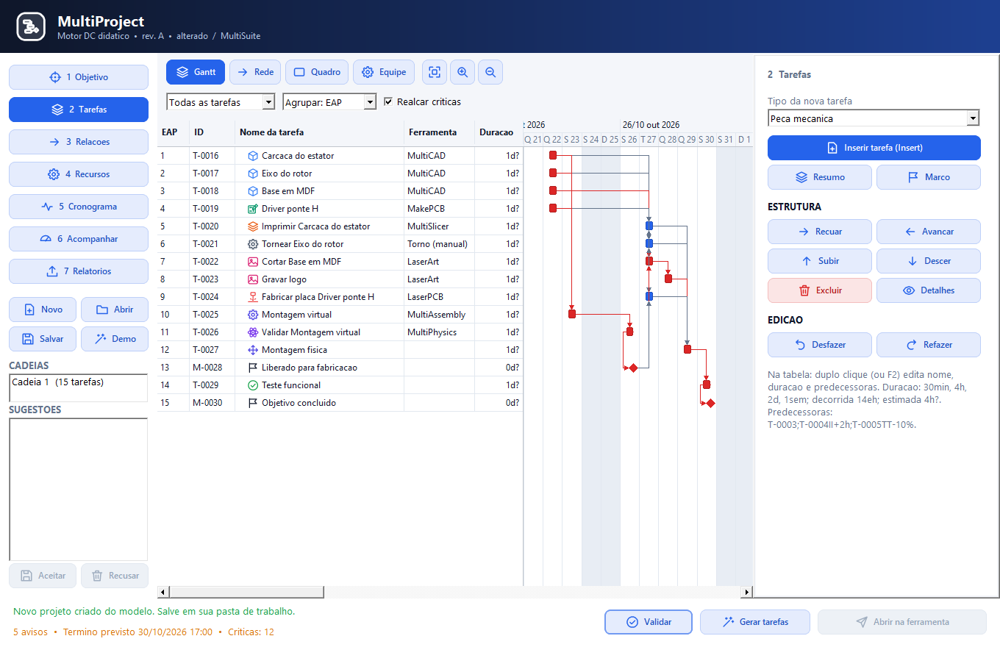
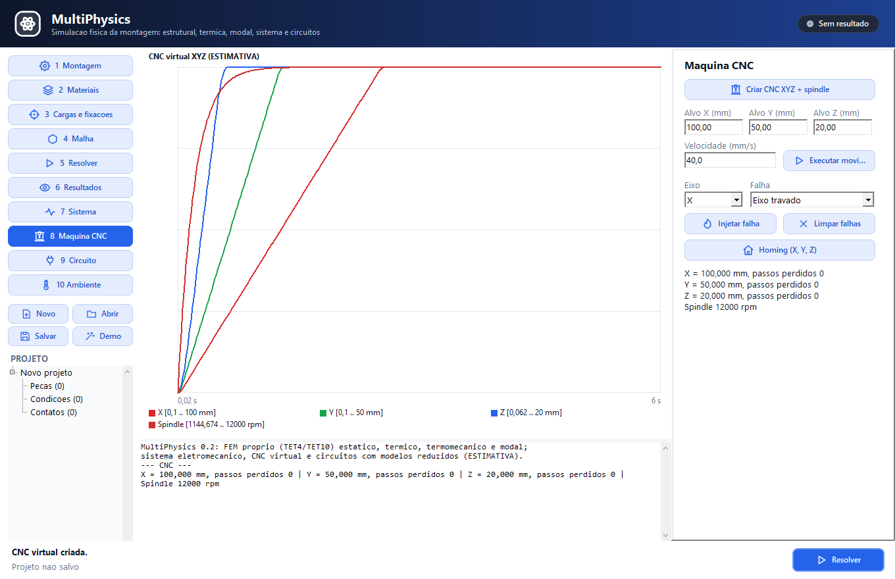

MultiCNC: Da Ideia à Fabricação em um Único Ecossistema
Plataforma aberta para CNC Router, CNC Laser, Impressão 3D, Eletrônica e Fabricação de PCBs. Desenvolvida para integrar modelagem CAD, geração de percursos CAM, simulação física multidomínio e controle de máquinas sem a fragmentação de softwares desconexos.
Uma ideia, vários processos, um único ambiente
O MultiCNC reduz a fragmentação no ciclo de fabricação digital. Em vez de depender de ferramentas isoladas com formatos incompatíveis, a suíte reúne aplicações que se comunicam perfeitamente do conceito inicial até o corte final.
💡 Dica: Clique em qualquer uma das etapas acima para abrir o formulário detalhado com conceitos dos manuais e fotos rotativas.
14 Aplicações Especializadas Trabalhando em Conjunto
Cada módulo foi desenvolvido para desempenhar um papel específico de excelência na esteira maker, com total reaproveitamento de parâmetros, componentes e configurações.
MultiCNC
Central de operação e controle de máquinas (Router, Laser, 3D). Análise de G-code em tempo real, visualizador 3D de percurso, conexão serial/TCP/IP e envio com confirmação de bloco.
MultiCAD
Modelagem geométrica 2D e 3D paramétrica com kernel OpenCASCADE integrado. Ferramentas de extrusão, revolução, corte booleano e preparação direta para CAM.
MultiSlicer
Fatiador especializado para manufatura aditiva (Impressão 3D). Geração de camadas, controle de densidade de preenchimento (infill), suportes automáticos e prévia volumétrica.
MultiProject
Gestão ágil de engenharia e produção com diagramas de Gantt, rede PERT/CPM, cálculo de caminho crítico, estimativa de custos e vínculo direto com os arquivos dos projetos.
MultiPhysics
Simulação física multidomínio. Permite analisar esforços mecânicos, condução térmica, eletromagnetismo, dinâmica de motores e comportamento de materiais antes da fabricação.
MultiAssembly
Ambiente de montagem eletromecânica integrando carcaças mecânicas e placas eletrônicas. Inclui biblioteca nativa com mais de 135 modelos tridimensionais prontos.
MakeRouter & RouterPCB
Ferramentas dedicadas para desbaste, cortes e bolsões em madeira, acrílico e alumínio, além de isolamento mecânico de trilhas de circuito impresso com fresa cônica.
LaserArt & LaserPCB
Gravação vetorial e raster de alta velocidade, corte a laser com assistência de ar, prévia de contorno de mesa e sensibilização química/remoção de tinta para confecção de placas.
MakePCB
Editor esquemático e roteamento de placas de circuito impresso com ampla biblioteca de pegadas (footprints), exportação de arquivos de furação e percursos de gravação.
SimuCNC
Simulador virtual tridimensional de máquinas com emulador GRBL embutido. Conecta-se via portas seriais virtuais (com0com) ou TCP/IP para testes seguros sem desgaste mecânico.
MultiCAM
Geração e pós-processamento de código G para diferentes tipos de fresadoras e tornos. Definição de taxas de avanço, velocidades de fuso e estratégias de corte.
MultiSuite Tray
Utilitário de área de notificação do Windows que inicia com o sistema e oferece acesso rápido com um clique a todos os 14 aplicativos e documentações instaladas.
Capturas Reais das Aplicações em Execução
Conheça a interface gráfica rica, os visualizadores tridimensionais e os painéis de parametrização da MultiSuite.






Manuais do Usuário com Ilustrações e Diagramas
Manuais técnicos completos e detalhados com passo a passo operacional, configuração de eixos, calibração e guias rápidos de uso disponíveis nos formatos PDF e Markdown:
| Aplicação / Módulo | Versão | Foco Operacional | Manual Ilustrado (PDF) | Versão Online (GitHub) |
|---|---|---|---|---|
| MultiCNC | 0.1.0.3 | Operação de máquinas, painel GRBL e envio de código G | 📄 PDF (600 KB) | 📖 Markdown |
| MultiCAD | 0.0.8.4 | Modelagem 3D, primitivas, kernel OpenCASCADE e exportação | 📄 PDF (3.1 MB) | 📖 Markdown |
| LaserArt | 0.02.1 | Gravação vetorial/raster, potência de laser e contorno de área | 📄 PDF (500 KB) | 📖 Markdown |
| MakePCB | 0.1.0.0 | Criação de esquemas, leiautes e fabricação de circuitos | 📄 PDF (2.5 MB) | 📖 Markdown |
| MakeRouter | 0.1.0.0 | Fresamento de madeira, parâmetros de ferramenta e fixação | 📄 PDF (880 KB) | 📖 Markdown |
| MultiPhysics | 0.2.0.0 | Simulação térmica, mecânica, eletromagnetismo e materiais | 📄 PDF (1.2 MB) | 📖 Markdown |
| MultiSlicer | 0.1.0.0 | Fatiamento de modelos STL, infill, suportes e impressão 3D | 📄 PDF (770 KB) | 📖 Markdown |
| MultiProject | Guia Rápido | Cronogramas, diagrama de rede e cálculo de caminho crítico | — | 📖 Markdown |
Baixe o MultiCNC para Windows e Linux
Instaladores completos compilados diretamente do repositório oficial com todas as ferramentas e bibliotecas incluídas.
Windows x64
Instalador executável completo com os 14 aplicativos, 135 componentes 3D, perfis de laser e utilitário de bandeja.
setup_multcnc_0.18.exe (~40 MB)
Linux x86_64
Pacote compactado contendo binários nativos compilados para distribuições Linux x64 (Ubuntu, Debian, Fedora).
setup_linux_x64_001.tar.xz
Raspberry Pi & ARM64
Execução dedicada para embarcados ARM64 (Raspberry Pi 3/4/5 e placas industriais com Raspberry Pi OS 64-bit).
setup_linux_arm64_001.tar.xz
Código-Fonte Completo
Acesse o repositório aberto no GitHub para clonar, compilar no Lazarus/Free Pascal ou contribuir com melhorias.
github.com/marcelomaurin/multicnc
Precisa de Customização ou Integração de Máquinas?
A Maurinsoft desenvolve soluções customizadas de hardware e software para controle de CNCs especiais, automação de processos industriais e prototipagem sob medida.